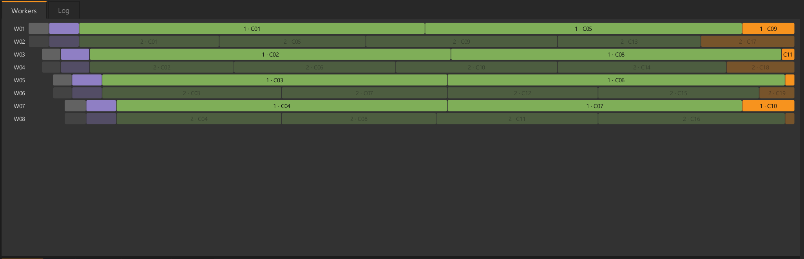
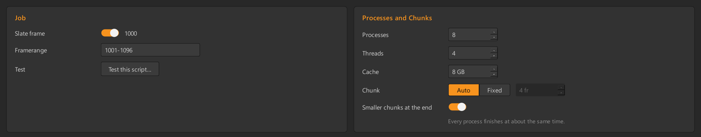
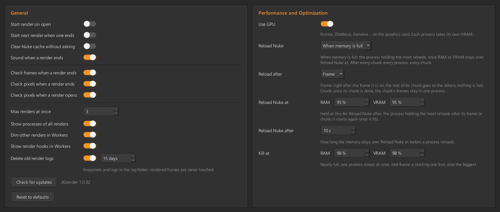

Render local rápido para Nuke. El render se divide en trozos (chunks) que varios procesos de Nuke calculan a la vez. Tras el render, JKrender revisa cada frame en el disco.
Índice
1Cómo funciona JKrender
2Instalación y arranque desde Nuke
3Mapa de la ventana
4Tarjetas de render y fila de control
5Mosaicos y mapa de frames
6Panel Output: vista previa y frames
7Paneles Chunks y Details
8Paneles Workers y Log
9Panel System
10Pestañas Job y Settings
11Cómo ajustar un render
12Test this script
13Vigilancia de RAM y VRAM
14Comprobaciones, sonidos, caídas, datos
15Ratón y teclas: chuleta
16Cuando algo no va
1 Cómo funciona JKrender
Un render normal de Nuke corre en un solo proceso que calcula todo el script frame a frame. Pero un Nuke rara vez usa los 32 hilos de la CPU. Por eso JKrender lanza varios procesos de Nuke a la vez. Cada uno abre el script una sola vez y luego recibe trozos de trabajo, llamados chunks: por ejemplo 10 frames seguidos.
Tres números que deciden la velocidad
Processes
Cuántos procesos de Nuke corren a la vez (para todos los renders juntos). Más procesos hacen más trabajo a la vez, pero también usan más RAM y VRAM.
Threads
Cuántos hilos de CPU recibe cada proceso (Nuke -m). Processes × Threads debería dar más o menos los hilos del PC (aquí 32).
Cache
El límite de caché de un proceso en GB (Nuke -c). En realidad un proceso usa más. Cuánto, lo muestra System › RAM.
Por defecto son 8 procesos × 4 hilos. Los scripts de comp pesados que un solo Nuke ya llena (Defocus, Denoise) suelen ir más rápido en 4 × 8 y usan la mitad de RAM. Los scripts cuya VRAM crece quieren menos procesos. Qué es lo mejor para tu script lo mide Test this script (capítulo 12).
Dónde se guarda cada cosa
Qué
Dónde
Ajustes
~/.nuke/JKrender/settings/settings.json (cada usuario tiene los suyos). Las versiones antiguas los tenían en ~/.jkrender; JKrender los mueve solo en su primer arranque.
Logs de render
~/.nuke/JKrender/log/: una carpeta por render (snapshot del script, job, el log de cada proceso de Nuke y report.json). Los de más de 15 días se borran; las copias del script de los renders que no están abiertos se comprimen (.gz) pasada una hora.
Bibliotecas descargadas
~/.nuke/JKrender/lib/: numpy y OpenEXR (vista previa EXR) y ffmpeg (películas). Una nueva versión de JKrender no las toca.
Resultados de tests
~/.nuke/JKrender/settings/test_results
Frames renderizados
Donde los manda el Write. JKrender nunca los borra solo, únicamente con el botón Delete.
2 Instalación y arranque desde Nuke
Instalación (una vez)
1Copia la carpeta entera JKrender en %USERPROFILE%\.nuke\. La carpeta puede venir con otro nombre (un zip de GitHub da JKrender-main): renómbrala siempre a JKrender.
2Añade esta línea a ~/.nuke/init.py (crea el archivo si no existe):
nuke.pluginAddPath("./JKrender")
3Reinicia Nuke. En el primer arranque JKrender pregunta, en una sola pregunta, si descargar lo que Nuke no trae:
Qué
Tamaño
Para qué
numpy y OpenEXR
unos 15 MB
vista previa EXR y comprobación de píxeles
ffmpeg y ffprobe
unos 77 MB
comprobar y reproducir películas (MOV, MP4, MXF)
Se descargan en segundo plano a JKrender/lib; mientras tanto Nuke se puede usar. ffmpeg es la build LGPL de github.com/BtbN/FFmpeg-Builds, verificada con la lista SHA-256 de la versión. Solo se ofrece si el PC aún no tiene ninguno: un ffmpeg en el PATH o de WinGet se usa primero.
Si lo rechazas, el render sigue funcionando, solo sin vista previa EXR o sin comprobar y reproducir películas. Vuelve a preguntar si borras lib/DECLINED (numpy, OpenEXR) o lib/DECLINED_FFMPEG (ffmpeg) y reinicias Nuke. Si una descarga falla, Nuke dice por qué y cómo instalarlo a mano (winget install ffmpeg).
Nuke 16 y posteriores abren la ventana en el Python propio de Nuke. Nuke 13–15 traen PySide2: instala Python 3.10 o posterior y pip install PySide6 psutil, JKrender lo encuentra (o define JKRENDER_PYTHON). Windows, macOS y Linux.
Nueva versión: JKrender la ofrece al abrirse (What's new, Update, Later) o con Settings › Check for updates; las carpetas lib, log y settings se quedan. Luego reinicia Nuke.
El menú JKrender en Nuke
Opción
Qué hace
Render Selected Write(s) Ctrl+Alt+R
Envía los Writes elegidos (o Groups con Writes) a JKrender. Cada Write tiene su propia tarjeta. Si la ventana aún no está abierta, se abre.
Open Renders Folder
Abre la carpeta con los logs de render.
Si el script no está guardado, pregunta Save it and render?: se renderiza la versión guardada. Un Write cuya ruta no tiene número de frame (sh010.exr en lugar de sh010.####.exr) se rechaza: cada frame sobrescribiría el mismo archivo. Los scripts de Nuke Non-commercial e Indie (.nknc, .nkind) se renderizan en el mismo modo.
Qué pasa al enviarlo
Snapshot: se renderiza el script tal como estaba al enviarlo. Puedes seguir trabajando y guardando en Nuke enseguida; el render en marcha no se entera. Para renderizar un script cambiado, envíalo otra vez desde Nuke: el envío más nuevo sustituye a la tarjeta vieja.
Pregunta por la caché: si hay un Nuke abierto, Render pregunta si vaciar sus buffers, la caché de reproducción y la caché Blink, para que el render tenga más memoria. La respuesta por defecto es No y el render arranca en ambos casos; Settings › Clear Nuke cache without asking la vacía sin preguntar. La caché de disco no se toca.
3 Mapa de la ventana
Arriba están las tarjetas de render y la fila de control, debajo los números y el mapa de frames. El resto son tres paneles: a la izquierda Output / Chunks / Details, arriba a la derecha Workers / Log y abajo a la derecha System / Job / Settings / Donation / Author. Los bordes entre paneles se pueden arrastrar.
1
2
3
4
5
6
7
8
9
10
1Tarjetas de render: un Write (render) por tarjeta. Un clic lo elige.
2Cuándo deberían estar listos todos los renders.
3Render, Pause, Stop del render elegido.
4Slate, Framerange, Processes, Threads, Cache y Chunk de este render (solo lectura).
5Mosaicos con números: frames, tiempo, velocidad, procesos, comprobaciones.
6El mapa de frames por chunks. Un clic en un frame lo muestra.
7Output: vista previa de un frame con reproducción.
8Output: filtro, comprobaciones, carpeta, borrar y la lista de frames.
9Workers: línea de tiempo de cada proceso de Nuke.
10System: la carga del PC y la tabla de procesos. Al lado, las pestañas Job, Settings, Donation y Author.
4 Tarjetas de render y fila de control
Una tarjeta de render
Cada Write enviado es una tarjeta: número, nombre del script, el archivo que renderiza el Write (sh010_comp_v003.####.png; el tooltip muestra el nodo Write y la ruta entera), barra de progreso y estado (Ready, Waiting, Rendering, Paused, Checking output, afterRender hooks, Done, Failed, Stopped). Clic selecciona la tarjeta y toda la ventana muestra ese render. Shift+clic selecciona varias; Render, Pause y Stop valen entonces para todas, Render again también para las terminadas (pregunta una vez para todas). La cruz × cierra el render, los frames en disco se quedan. Tarjeta roja: el render tiene un error (falló, Nuke no renderizó un frame, frames rotos, un error de Nuke, un render hook que falló), incluso mientras renderiza; el tooltip de la tarjeta dice cuál. Un proceso de Nuke caído no pone la tarjeta en rojo: el chunk se vuelve a renderizar en un Nuke nuevo y el tooltip dice cuántas veces cayó Nuke. Un proceso cerrado por RAM o VRAM tampoco es un error.
Los renders comparten un presupuesto de procesos. Lado a lado corren como mucho los que diga Settings Max renders at once (por defecto 3); los procesos se reparten entre ellos (8 → 4 + 4 → 3 + 3 + 2). Una película (MOV, MP4…) tiene un proceso propio adicional y no cuenta en Max renders (capítulo 6). Los números de las tarjetas van por posición: cierras una y las demás se numeran de nuevo desde 1.
La tarjeta de la derecha: ALL RENDERS DONE IN
Cuándo deberían terminar todos los renders que corren o esperan, a la velocidad a la que renderiza ahora el PC. Debajo: a qué hora acaban, cuánto llevan y cuántos frames faltan. Cuando todos terminan, la tarjeta muestra ALL RENDERS TOOK: cuánto duró todo.
La fila de control
Elemento
Qué hace
Render
Arranca el render elegido (o varios elegidos). Salta los frames que ya están bien en el disco. Tras Stop sigue donde lo dejó (Resume). Si el render tiene frames en el disco (terminado, parado o con frames de antes), pregunta: Only missing renderiza solo los frames que faltan o están rotos (los demás salen verde oscuro en el mapa), All frames again lo renderiza todo de nuevo, Cancel nada. Tras Stop de una pasada All frames again ofrece primero Go on (N left): se renderizan también los frames a los que esa pasada no había llegado.
Pause
Congela todos los procesos de Nuke del render a mitad de frame (la CPU queda libre, la memoria sigue ocupada). Otro clic continúa.
Stop
Para el render, cierra sus procesos y borra frames a medio escribir y archivos temporales de Nuke. Los frames terminados se quedan.
Slate
El número de la slate: el frame antes del Framerange, cuando la slate está activada (pestaña Job).
Framerange
Los frames de este render: el rango de Nuke, salvo que lo cambies en la pestaña Job.
Processes · Threads · Cache · Chunk
Con qué corre el render. Se cambia en la pestaña Job › Processes and Chunks; el número de procesos también durante el render, con clic derecho en System.
Barra de color
El resultado del render, ver abajo.
La barra de color con el resultado
Color
Qué significa
Ejemplo
Verde
Terminado, todos los frames están en el disco y pasan la comprobación.
Done in 2:06. All 97 frames are on disk and pass the check.
Amarillo
Terminado, pero algo no está verificado o parece sospechoso (frames sin comprobar, sospechosamente pequeños; un slate no cuenta como pequeño).
frames not checked · 2 suspiciously small
Rojo
Un error: el render falló, frames rotos, o Check pixels encontró un problema (NaN, un frame negro…).
2 broken frames · Output: Problems shows them
Gris
En curso: Checking pixels…, esperando procesos libres y similares.
Waiting: 1 render already uses the PC
5 Mosaicos y mapa de frames
Mosaico
Qué muestra
Frames
Frames hechos / todos del render, porcentaje y cuántos se renderizan ahora.
Elapsed
Cuánto lleva el render (sin pausas).
Remaining
El tiempo restante a la velocidad actual.
Speed
Frames por segundo y por minuto, todos los procesos juntos. El mejor número para comparar ajustes.
Frame time
Cuánto tarda un frame en un proceso y cuántos se calculan a la vez (× N at once).
Nuke processes
Cuántos procesos renderizan / cuántos corren y cuántos puestos de Processes usan todos los renders. Las películas aparte como + N for movies; con solo películas abiertas, N for movies.
Check frames
La comprobación de archivos: frames que faltan, vacíos, cortados, ilegibles y sospechosamente pequeños.
Check pixels
La comprobación de píxeles de R, G y B (EXR, PNG, JPEG, TIFF, DPX): frames negros, vacíos y de un solo color, frames iguales a otro y un frame cuyo tamaño o profundidad de bits difiere del resto. En EXR también NaN, inf y compresión; sus demás capas (AOV, pases de utilidad) no se revisan, y los frames solo de ellas muestran no RGB. Una película tiene, en lugar de estos dos, un solo recuadro, Check video: ok, check it, broken o checking mientras se leen sus frames.
El mapa de frames
Cada cuadradito es un frame, agrupados por chunks (C01, C02…). Un clic en un frame lo abre en la vista previa; su tooltip muestra el estado, el proceso, el tiempo, las comprobaciones y los segundos de beforeFrameRender / afterFrameRender del Write. Colores:
en espera (queued)
renderizando
hecho
en el disco: saltado (Only missing), o tras All frames again todavía el frame viejo hasta que se escriba el nuevo
sospechosamente pequeño
fallido / roto
Render again: todo, o solo lo que falta
Si el render tiene frames en el disco y pulsas Render again, pregunta: Only missing (por defecto) renderiza solo los frames que faltan o están rotos; los demás se saltan y salen verde oscuro en el mapa. All frames again lo renderiza todo de nuevo, Cancel nada. Una película (MOV, MP4) no pregunta: es un solo archivo y se renderiza entera. Si todos los frames ya están en el disco y pasan la comprobación, no se renderiza nada y el Log dice Nothing to render.
Con varias tarjetas elegidas con Shift pregunta una vez para todas (p. ej. 27 of 27 frames of 3 renders…). Los frames que ya estaban en el disco al abrir el render, o de la pasada anterior al Stop, salen verde oscuro. En Output el filtro Rendered muestra entonces solo los frames de esta pasada, All todos.
6 Panel Output: vista previa y frames
Vista previa
Rueda del ratón: zoom, arrastrar mueve la imagen.
Doble clic: vuelve al frame entero. Si ya lo está, la vista crece sobre los tres paneles; se vuelve con Esc.
Con zoom se carga la resolución completa (también EXR y 4K).
Un EXR se muestra en su formato: un bbox más pequeño que el formato queda en su sitio sobre negro, el overscan se recorta. Clic derecho › Show the whole format desactivado: el bbox solo llena la vista previa.
Space arranca y para la reproducción. Nunca pulsa un botón, así que nunca para el render.
La barra bajo la vista previa
Frame anterior · Play/Pause (reproduce en bucle los frames terminados a los fps del script) · frame siguiente · deslizador por todos los frames · número de frame · ampliar (vista sobre tres paneles, Esc para volver). Bajo la barra: ruta, tamaño, resolución, canales y resultados de las comprobaciones del frame.
Botones
Elemento
Qué hace
Filtro
All: todos los frames a la vez: renderizados, saltados, rotos, not on disk y los que faltan por renderizar, y frames en el disco fuera del Framerange. Los demás filtros son partes de este: Rendered: solo los frames renderizados en esta pasada. Problems: errores, frames sospechosamente pequeños y lo que encontró la comprobación de píxeles. Framerange: solo los frames del rango elegido.
Check frames
Vuelve a revisar los archivos de todos los frames: existe, no está vacío, está entero y legible y no es mucho más pequeño que el resto. Un frame que aún no está en el disco sigue como not on disk y no cuenta como roto.
Check pixels
Revisa en segundo plano el RGB de cada frame (EXR, PNG, JPEG, TIFF, DPX): frames negros, vacíos y de un solo color, frames iguales a otro en cualquier punto de la secuencia, tamaño o profundidad de bits distintos; en EXR también NaN, inf y compresión, no sus demás capas. Un slate exactamente igual al primer frame (sin nada) muestra en rojo same as 1000. Unos 0,1 s por frame 4K. Solo avisa, no vuelve a renderizar nada.
Open folder
Abre la carpeta de salida.
Delete
Borra del disco los frames renderizados: todos (por defecto) o un rango que indiques. Pregunta antes.
La lista de frames
Columnas: Frame, State, Chunk, Worker (qué proceso lo calculó), Time, Size, Check frames, Check pixels. Con el filtro All todos los frames están en la lista desde el principio y su estado cambia mientras se renderizan. Tras Render again los frames no desaparecen: quedan como on disk, queued again con su tamaño y tiempo anteriores (se pueden ver y reproducir) hasta que el nuevo render los sobrescribe. Los frames en el disco fuera del Framerange elegido siguen en la lista con la nota not in Framerange.
Clic derecho en un frame (o en varios elegidos): Render this frame / batch: vuelve a renderizar solo esos frames (si el render corre, se añaden a él). Delete this frame / batch: los borra del disco (solo si el render no corre).
7 Paneles Chunks y Details
Chunks
Una fila por chunk: Chunk (C01…), Frames (rango), Count, State, Process (quién lo calcula), Done, Time, s / frame y Note (por qué se repitió un chunk, try 2 of 3 y similares). Un frame que falla tres veces, cada vez en un Nuke nuevo, se abandona solo, en un chunk propio; el resto de su chunk sigue renderizándose.
Clic derecho:Render again (el chunk de nuevo), Show process log (el log del proceso que lo calculó), Delete frames from chunk (solo si el render no corre).
Details
Todo sobre el render en un sitio: el script y su snapshot, los Writes y rutas de salida, formato, fps, rango, versión de Nuke, con qué Processes × Threads × Cache corre, tiempos y las rutas a los logs. Útil cuando necesitas saber exactamente qué se renderizó.
MOV / MP4 / MXF: en lugar de la lista de frames aparece un archivo de película con sus detalles (códec, perfil, fps, resolución, timecode, número de frames frente a los ajustes del Write) y un reproductor con lupa. Botones Check video, Open folder, Delete video. Tras el render ffmpeg lee además cada frame: los frames negros, de un solo color y congelados (iguales al anterior) son errores, en rojo como en una secuencia; no se vuelve a renderizar nada por ellos. Una película no se puede dividir, así que la renderiza un proceso con todos los hilos. Ese proceso corre aparte, junto a los puestos de Processes: arranca enseguida, aunque corran otros renders, y una secuencia a su lado no pierde ningún proceso. No cuenta en Max renders at once; varias películas tienen un proceso cada una. Si a su lado renderiza una secuencia, el proceso de la película se nombra según los puestos (W09 con Processes 8), si no recibe W01; tiene su propia fila en System. Solo espera cuando la memoria está por encima de Reload Nuke at. Las reglas de memoria lo cierran el último de todos, porque la película empezaría de nuevo desde el principio.
8 Paneles Workers y Log
Workers: línea de tiempo de los procesos

Una fila por proceso de Nuke (W01–W08), el tiempo de izquierda a derecha. gris: Nuke arranca y abre el script (también al cambiarlo por un Nuke nuevo, con la etiqueta again: reload). verde: chunks terminados (con el número de chunk). naranja: el chunk que se renderiza ahora. violeta: los render hooks, beforeRender entre la carga del script y el primer chunk, afterRender tras el último chunk (Settings › Show render hooks in Workers). Los chunks de otros renders salen atenuados (Settings › Dim other renders in Workers). Se ve enseguida si un proceso está parado, vuelve a arrancar o tarda en abrir el script. El tiempo vacío entre dos renders se recorta, y dentro de un render un tramo de 30 s o más sin ningún proceso: solo queda un espacio estrecho, así los renders conservan su anchura. No hay eje de tiempo; cuánto duró un chunk lo dice su tooltip.
Un clic derecho en la fila de un proceso abre el mismo menú que en el panel System (capítulo 9).
Al pasar el ratón sobre un chunk se ven sus frames y cuántos se renderizaron, cómo terminó el chunk (every frame rendered, stopped after frame 1012 for a reload (VRAM over 95 %), stopped mid-chunk: GPU frozen, Nuke crashed (exit code …)) y qué hizo después el proceso (then: on to C07, closed: RAM 98 %). El resto de un chunk interrumpido vuelve a la cola y otro proceso lo termina.
Log
Los mensajes de JKrender y la salida de cada proceso de Nuke, con la hora. Filtro: All, JKrender only (solo mensajes de JKrender), Errors and warnings. Open log folder abre la carpeta con los logs de este render: el snapshot del script, job.json y el worker_NN.log de cada proceso.
Cada proceso indica en el log cuánto tardó en estar listo, dividido en arranque de Nuke y apertura del script. Si el arranque tarda 15 s o más, JKrender avisa. Un arranque lento suele ser la licencia o los scripts de inicio del pipeline, no el script en sí.
El Log dice también cuánto tardaron los render hooks (W01 ran the beforeRender hooks (2) in 0.31 s, los hooks del Write por frame sumados al terminar el render) y avisa cuando varios procesos esperaron en el mismo momento: por lo general al disco, y entonces más procesos no harán el render más rápido.
9 Panel System
Mosaicos y gráficas
Los mosaicos tienen el mismo ancho, en el orden CPU (carga e hilos), RAM (X of Y GB – cache Z GB: cuánto está ocupado y cuánto de ello es cache de los Nukes; el tooltip separa lo que usan los procesos de Nuke y lo que usa el resto del PC), GPU (carga de la tarjeta), VRAM (memoria de la tarjeta), Disk write, Disk read y Network. La gráfica Load muestra CPU, RAM, GPU y VRAM en %, la gráfica Disk / network transferencias en MB/s. CPU threads: una barra por hilo del procesador, para ver si todo el PC está ocupado.
Tabla de procesos
Una fila por puesto de Processes, también para un puesto vacío donde ahora no corre ningún proceso (cerrado, esperando memoria), más una fila por cada película en marcha. Con solo películas abiertas, una fila por película.
Columna
Significado
Process
Número del proceso (W01…).
Script · File
El script que renderiza el proceso y el archivo que escribe.
State
Qué hace el proceso y qué hará después, p. ej. busy → reload (VRAM over 95 %), closed (GPU frozen), wait: Reload at 85 % of VRAM, running afterRender hooks. Todos los textos están en la tabla del capítulo 13. El tooltip de un puesto en espera dice exactamente qué espera.
CPU
Cuántos hilos del procesador usa de verdad el proceso (de cuántos tiene).
RAM · Cache
Memoria real del proceso y su cache de Nuke frente al límite.
GPU · VRAM
Carga de la tarjeta gráfica y VRAM de este proceso. Cualquier tarjeta: NVIDIA, AMD o Intel Arc (en Linux NVIDIA y AMD).
Frames · Avg frame · Last frame
Cuántos frames hizo, cuánto tardaron de media y el último.
Script load
Cuánto tardó Nuke en arrancar y abrir el script.
Uptime · Chunk · Chunks
Cuánto lleva corriendo, en qué chunk está y cuántos hizo.
PID · Frame · Peak RAM
Columnas ocultas: ID del proceso en Windows, frame actual, RAM máxima.
Clic en la cabecera de la tabla abre la lista de columnas: marca una columna para mostrarla u ocultarla, las flechas cambian el orden. Las columnas también se arrastran por la cabecera. Anchos y orden se guardan al cerrar la ventana.
Clic derecho en un proceso (en la tabla o en una fila de Workers) abre el menú de la derecha. Con varios renders en marcha, Add process to tiene un submenú para elegir el render.
Opción del menú
Qué hace
Pause / Resume
Detiene o reanuda solo este proceso.
Close after this chunk
El proceso termina su chunk y se cierra (State busy → closes by me, luego closed by me), incluso uno pausado o que ya se cierra por memoria. Processes baja en 1 y se queda así.
Close
Cierra el proceso enseguida. Su chunk vuelve a la cola. Otro puede ocupar su puesto.
Work on › render
Pasa el proceso a otro render en marcha (State busy → move to y el nombre del Write), tras el frame o el chunk según Reload after.
Add process
Arranca un proceso más (también con clic en un hueco vacío de la tabla). Processes sube en 1 y se queda así. Las reglas de memoria siguen valiendo.
Start again · Remove process
En un proceso cerrado: lo arranca de nuevo o lo quita (también un puesto vacío sin proceso). Uno quitado no vuelve y Processes baja en 1.
Show process log
Abre el log de este proceso.
10 Pestañas Job y Settings: cada ajuste
Los ajustes se guardan al momento. Cada uno tiene un tooltip, los importantes una nota gris debajo.

Pestaña Job: Job (el render elegido arriba)
Ajuste
Qué hace
Defecto
Slate frame
Activado: cada render renderiza además un frame de slate antes de su Framerange (1001-1020 → slate 1000). Junto al interruptor está el número de slate del render elegido.
sí
Framerange
Los frames del render, p. ej. 1001-1100 o 1001-1010,1050. Cada render tiene el suyo. Un campo vacío devuelve el rango de Nuke. Se confirma con Enter o con clic en otro sitio. Bloqueado durante el render.
de Nuke
Test
Test this script… mide ajustes para este PC y muestra el más rápido (capítulo 12).
—
Pestaña Job: Processes and Chunks (para todos los renders)
Ajuste
Qué hace
Defecto
Processes
Procesos de Nuke para todos los renders juntos. Las películas tienen un proceso adicional.
8
Threads
Hilos por proceso (-m).
4
Cache
Límite de cache de Nuke por proceso en GB (-c). Lo que un proceso usa de verdad está en System › RAM. Una cache demasiado pequeña frena el render: Nuke descarta y recalcula.
según RAM
Chunk: Auto / Fixed
Auto: unos 4 chunks por proceso, como mucho 10 frames (46 frames con 8 procesos → 2, 96 → 3, 320+ → 10). Fixed: el tamaño a la derecha. Vale para chunks que aún no empezaron.
Auto
Smaller chunks at the end
Hacia el final del render los chunks se hacen más pequeños, hasta frames sueltos, así todos los procesos terminan casi a la vez.
sí
Processes, Threads y Cache están bloqueados durante el render. El número de procesos se cambia durante el render con clic derecho en System (Add process, Close after this chunk, Remove process).

Pestaña Settings: General
Ajuste
Qué hace
Defecto
Start render on open
El render empieza en cuanto se abre la ventana, sin pulsar Render.
no
Start next render when one ends
Cuando un render termina o falla, el siguiente aún no iniciado arranca solo, en el orden de las tarjetas. Un render que detuviste no arranca nada.
no
Clear Nuke cache without asking
Render vacía cada vez, sin preguntar, la caché de los Nukes abiertos (buffers, caché de reproducción, caché Blink). Desactivado: pregunta antes.
no
Sound when a render ends
Un sonido al terminar el render, cuando acaban las comprobaciones activadas. Otro sonido si hay error, frames rotos o un problema de píxeles. Un render detenido queda en silencio.
sí
Check frames when a render ends
Al terminar el render (también tras Stop), cada frame renderizado una vez: ¿existe, no está vacío, está completo y legible, no es mucho menor que los demás? Desactivado: un frame roto cuenta como hecho hasta que pulses Check frames.
sí
Check pixels when a render ends
Justo después de la comprobación de frames, el RGB de todos los frames en segundo plano (negro, un color, iguales, formato distinto; en EXR NaN e inf; en una película frames negros, de un solo color y congelados). Solo informa.
sí
Check pixels when a render opens
La misma comprobación de los frames que ya están en disco, nada más abrir un render. Render la detiene.
sí
Max renders at once
1: los renders van uno tras otro, el siguiente empieza a cargar mientras el anterior termina sus últimos chunks. 2–3: corren lado a lado y se reparten los procesos (no más rápido en total, pero ves pronto frames de cada plano). Las películas no cuentan.
3
Show processes of all renders
Workers y System muestran los procesos de todos los renders. Desactivado: solo los del elegido.
sí
Dim other renders in Workers
En la línea de tiempo brillan los chunks del render elegido, los demás quedan atenuados.
sí
Show render hooks in Workers
Los hooks beforeRender y afterRender del script como bloques violetas en la línea de tiempo de Workers. Desactivado: no se dibujan; se ejecutan igual y el Log los registra.
sí
Delete old render logs
Al abrir JKrender borra las carpetas de log más antiguas que ese número de días. Nunca frames. Las copias del script de los renders que no están abiertos se comprimen (.gz, una quinta parte) y se descomprimen al volver a renderizar.
sí, 15 días
Check for updates pregunta al momento a GitHub por la versión más reciente (JKrender también pregunta en cada arranque); una más nueva abre la ventana de actualización. Reset to defaults devuelve todo a los valores por defecto, también las columnas de las tablas.
Pestaña Settings: Performance and Optimization
Ajuste
Qué hace
Defecto
Use GPU
Arranca Nuke con --gpu, así los nodos GPU (Kronos, ZDefocus, Denoise…) los calcula la tarjeta gráfica. Cada proceso tiene su propia VRAM. Vale para procesos arrancados desde ahora.
sí
Reload Nuke
Un proceso cierra Nuke y abre el script en uno nuevo, con RAM y VRAM otra vez al principio; cuesta una carga del script. When memory is full: cuando la RAM o la VRAM lleva Reload Nuke after por encima de Reload Nuke at, y solo el proceso que más ocupa, de uno en uno. After every chunk: cada proceso tras cada chunk.
When memory is full
Reload after
Cuándo ocurre una recarga por memoria. Frame: justo después del frame que el proceso acaba de terminar y escribir; el resto de su chunk vuelve a la cola para los demás, no se pierde nada y la memoria queda libre en un frame. Chunk: cuando termina todo su chunk; los frames de un chunk se quedan en un proceso (un nodo que lee los frames de alrededor los encuentra en su cache). Ceder un puesto a otro render, Work on y cerrar por memoria llena siguen lo mismo. After every chunk y Close after this chunk son siempre tras el chunk.
Frame
Reload Nuke at
RAM % y VRAM %. Si la memoria se queda Reload Nuke after en este valor o por encima, el proceso que más ocupa recarga Nuke. Los puestos cerrados solo vuelven por debajo.
RAM 95 %, VRAM 95 %
Reload Nuke after
Cuánto debe quedarse la RAM o la VRAM en Reload Nuke at o por encima antes de que el proceso que más ocupa recargue (1–600 s). Más corto devuelve la memoria antes; más largo ahorra cargas del script cuando la memoria solo roza la marca.
10 s
Kill at
RAM % y VRAM %. Memoria casi llena: un proceso se cierra enseguida, a mitad de frame. Su frame a medio escribir se borra y su chunk vuelve a la cola. Nunca por debajo de Reload Nuke at, así la recarga llega siempre antes. Bájalo si el PC se congela antes.
RAM 98 %, VRAM 98 %
Los campos de VRAM solo funcionan con Use GPU activado. JKrender vigila la memoria siempre; no se puede desactivar. El capítulo 13 describe todas las reglas y tiempos.
Pestañas Donation y Author
Donation: enlaces para apoyar al autor si JKrender te ahorra tiempo (por ahora PayPal). Author: Jan Kanta, enlaces a LinkedIn y GitHub.
11 Cómo ajustar un render
El camino recomendado para un script nuevo o pesado:
La VRAM crece con cada frame; más procesos no caben en la tarjeta.
VRAM +1,7 GB por frame → 1 × 32
Cómo saber que el ajuste no es bueno
Falta memoria
System › RAM está en Reload Nuke at, State muestra wait: Reload at … of RAM o closed (RAM 98 %), los procesos se cierran y arrancan de nuevo (bloques grises en Workers). Solución: menos procesos con más hilos, o una Cache menor.
Tarjeta gráfica llena
VRAM al 95 %, State muestra a menudo busy → reload (VRAM over 95 %), closed (VRAM 98 %) o closed (GPU frozen). Si se repite, el Log dice que menos procesos con más hilos pueden ser más rápidos (no cambia nada solo). Solución: menos procesos (Test this script dice cuántos), o desactivar Use GPU.
CPU sin usar
CPU threads está casi vacío y la RAM tiene margen. Solución: añade un proceso (clic derecho › Add process) o sube Threads.
Apertura lenta del script
Los bloques grises en Workers son largos, Script load es alto. Al arrancar, los Nukes se pelean por licencias y scripts de inicio. Solución: con chunks más largos se nota menos; casi nunca tiene que ver con el script en sí.
La mejor medida es el mosaico Speed (frames por minuto). Compáralo entre ajustes con el mismo script, o deja que lo haga Test this script.
12 Test this script
Un test terminado: la fila verde es la más rápida, la naranja la segunda. Winner test muestra cuánto más tardó el test con los demás, Winner Whole Shot lo mismo para todo el plano.
Botones de arriba
Create tests mira el ordenador (la línea bajo los botones: CPU, núcleos e hilos, en Intel núcleos de rendimiento y de eficiencia, RAM, gráfica) y crea 7 ajustes, desde 1 proceso con todos los hilos hasta tantos procesos como aguante el PC: cada proceso al menos 4 hilos y al menos 4 GB de caché. Con 32 hilos y 94 GB: 1×32, 2×16, 3×10, 4×8, 5×6, 6×5, 8×4. Con más de 64 hilos un proceso recibe como mucho 64 (un grupo de procesadores en Windows). Sustituye todo lo de la tabla.
Add test añade un ajuste propio (Processes, Threads, Cache, Reload Nuke y Reload after), Remove test quita los seleccionados. Clic derecho en una fila: Edit test. Los tests propios se recuerdan. La regla de cada ajuste está en la columna Reload Nuke Rule, justo después de Processes x threads: memory full, frame, memory full, chunk o every chunk.
La Cache de cada ajuste es la RAM para Nuke (menos una reserva para Windows) dividida entre el número de procesos, menos los 4 GB que un proceso usa aparte de su cache. Lo que esté corriendo en ese momento no importa.
La línea sobre la tabla dice cuántos frames usa el test: Round 1: 3 frames a process, Round 2: 8 a process, the same frames for every setup.
Cómo va el test
Los frames salen de 6 sitios repartidos por todo el plano (del primer frame al último), unos cuantos seguidos en cada uno. Todos los ajustes de una ronda renderizan los mismos frames.
Round 1: cada ajuste brevemente, 3 frames por proceso del ajuste con más procesos (24 frames con 32 hilos), como mucho 3 minutos. Round 2: los dos más rápidos (y cualquiera a menos del 5 % del mejor) otra vez, con 8 frames por proceso del ajuste con más procesos (8 procesos → 64 frames), como mucho 6 minutos. Así en el test se ven también la memoria que crece y Reload Nuke, no solo los primeros frames. Un ajuste 1,5× más lento que el mejor se detiene; tras dos así, se omiten los números de procesos mayores.
Winner test: cuánto más tardó el test que con el más rápido (los mismos frames, con el arranque de Nuke). Winner Whole Shot: una estimación de todo el plano = el tiempo del test + los frames restantes a Frames / min. El arranque se paga una vez y la velocidad más lenta en cada frame, así que en un plano largo la diferencia crece (p. ej. test +0:10, todo el plano +0:43). El tooltip de la celda muestra ambos tiempos.
Frames / min se cuenta cuando los procesos ya van: el arranque de Nuke y el primer frame de cada proceso no cuentan; en un render largo solo pasan una vez. Frames / s es lo mismo por segundo.
Columnas: Reload Nuke Rule, Avg processes (cuántos procesos renderizaron de media), Round 1, Round 2 (tiempo de la ronda, frames, arranque), Frames / min, Frames / s, Frame, CPU / RAM / GPU / VRAM avg, Fell (procesos caídos), Reloads (cuántas veces se recargó Nuke), Winner test, Winner Whole Shot, State. Un clic en la cabecera ordena; las columnas se pueden ensanchar y mover.
Use these settings pasa la fila verde a Job y Settings, también Reload Nuke y Reload after. Los frames van a una carpeta de test y se borran; los hook knobs del Write no se ejecutan en el test, y afterRender en absoluto. Las tablas quedan en ~/.nuke/JKrender/settings/test_results.
La ventana Add test (y la misma Edit test con el clic derecho).
Durante un test no debería renderizar nada más: mediría dos renders peleándose por el PC. El test no arranca junto a un render.
13 Vigilancia de RAM y VRAM
JKrender vigila la memoria siempre, para que Windows no empiece a usar el archivo de paginación y la tarjeta gráfica no se llene. Las reglas son generales: no siguen ningún número de un PC o script concreto, solo los porcentajes de Settings y lo que los procesos usan de verdad. Valen para cada puesto, pero siempre actúan de proceso en proceso.
Las reglas
Regla
Cuándo
Qué pasa
Reload Nuke When memory is full
La RAM o la VRAM lleva Reload Nuke after (10 s si no se cambia) en Reload Nuke at o por encima (una lectura no basta).
Solo el proceso que más ocupa de lo que falta se cierra tras su frame (Reload after: Frame) o su chunk y abre el script en un Nuke nuevo. Este arranca 3 s después si la memoria está bajo la marca de vuelta; si no, su puesto espera. La siguiente recarga solo cuando el Nuke nuevo haya renderizado su primer frame y la memoria siga alta. El último proceso en marcha siempre vuelve a arrancar.
Reload Nuke After every chunk
Tras cada chunk.
Cada proceso recarga Nuke tras cada chunk. No en los últimos chunks de un render: el nuevo no tendría nada que hacer.
Kill at
La RAM o la VRAM llega a Kill at.
Un proceso se cierra enseguida. Si algunos procesos aún están arrancando (sin frame todavía), se cierra el menos cargado de ellos: aún no ha hecho trabajo. Si no, el que más ocupa, para que baste con cerrar uno. Una película y un proceso arrancado a mano van al final. El Kill at de VRAM se omite cuando cerrar no bajaría la tarjeta de Kill at (otros programas ocupan la VRAM); el Log lo dice cada 2 minutos.
GPU frozen
VRAM desde 90 % y todos los procesos que trabajan menos uno (al menos 2) sin CPU durante 15 s y al menos 2× el tiempo de frame; o ningún frame durante 2,5× el tiempo de frame habitual, al menos 45 s.
Nuke espera a una tarjeta llena. Se cierra el proceso arrancado el último (una película al final), su chunk vuelve a la cola. El siguiente cierre así, como pronto 15 s después.
La regla 1.3
Un puesto cerrado lleva 5 s esperando memoria y la memoria sigue sobre la marca bajo la que vuelve.
El proceso que más ocupa de lo que falta recarga si creció al menos 1,3× desde su primer chunk (Nuke retiene memoria que ya no necesita). Un script que simplemente necesita la memoria no se toca. Cuando la memoria baja de la marca, el puesto vuelve solo y nada recarga.
Vuelve un puesto
5 s tras el cierre; RAM y VRAM bajo la marca de vuelta durante 5 s.
La marca de vuelta es Reload Nuke at, o más baja: Kill at menos un proceso del mayor tamaño que alcanzaron los procesos en este render (hasta entonces Cache + 4 GB). Los puestos vuelven de uno en uno: el siguiente tras el primer frame del que volvió, mientras la memoria limite los puestos. Un puesto liberado por un render o una película que terminó vuelve enseguida.
Todos los tiempos y umbrales
Qué
Valor
Dónde se cambia
Reload Nuke at (RAM, VRAM)
95 %, 95 %
Settings › Performance and Optimization
Kill at (RAM, VRAM)
98 %, 98 %
Settings, nunca bajo Reload Nuke at
Cuánto debe estar la memoria sobre Reload Nuke at
10 s
Settings › Reload Nuke after (1–600 s)
Arranque del Nuke nuevo tras una recarga
3 s
fijo
Regla 1.3: espera del puesto / crecimiento
5 s / 1,3×
fijo
GPU frozen: desde VRAM
90 %
fijo
GPU frozen: sin CPU
15 s y 2× tiempo de frame
fijo
GPU frozen: sin frame
2,5× tiempo de frame, mín. 45 s
fijo
Entre dos cierres GPU frozen
15 s
fijo
Vuelta de un puesto: tras cerrar / memoria libre seguida
5 s / 5 s
fijo
Separación entre arranques de Nuke
0,3 s
fijo
Intentos de un frame antes de abandonarlo
3 (cada uno en un Nuke nuevo, 3 intentos en cada uno)
fijo
Los textos de la columna State
State
Significado
loading · idle · busy · paused
Nuke arranca y abre el script · espera un chunk · renderiza · en pausa.
quitting
Nuke se está cerrando.
running afterRender hooks
Ejecuta los hooks afterRender del render, una vez al final; después se cierra.
busy → reload (VRAM over 95 %)
La memoria lleva Reload Nuke after sobre Reload Nuke at y este proceso es el que más ocupa: recarga Nuke tras su frame o chunk.
busy → reload (1.3 rule)
Un puesto espera memoria y este proceso creció 1,3×: recarga.
busy → reload
Reload Nuke: After every chunk.
quitting → reload (1.3 rule)
Se cierra para recargar, el porqué entre paréntesis.
busy → closes (RAM full) · (VRAM full)
La memoria limita los puestos: el proceso se cierra tras su frame o chunk.
busy → closes by me
Elegiste Close after this chunk.
busy → move to Write2
Pasa a otro render (Work on, o su puesto va a un render que empezó a su lado).
busy → another render
Su puesto va a otro render.
closed (reload)
Cerrado para recargar, un Nuke nuevo arranca enseguida.
closed (RAM 98 %) · closed (VRAM 98 %)
Cerrado por Kill at.
closed (GPU frozen)
Cerrado porque la tarjeta se congeló.
closed by me · closed
Lo cerraste tú · cerrado sin motivo de JKrender (el render terminó).
wait: 5 s
El puesto puede volver en 5 s.
wait: Reload at 85 % of VRAM (2 starting)
El puesto vuelve cuando la VRAM baje de 85 %; dos procesos aún arrancan y JKrender les guarda sitio.
wait: VRAM ok, checking
La memoria está bajo la marca; se comprueba que se mantiene 5 s.
wait: W03 1st frame
Espera a que W03 renderice su primer frame, para ver cuánto ocupa un proceso.
coming back
El puesto está arrancando de nuevo.
El Log anota cada espera: A place waits for RAM: it comes back under 85 % (now 97 %…), RAM 84 %: under 85 %, a place comes back once it stays there 5 s y The places waiting for RAM are back after 5:04, 7 s after it dropped under the mark.
No existe un tope de VRAM por proceso. Cache (-c) limita solo la cache de RAM de Nuke. La memoria gráfica de un proceso no se puede limitar: Windows no puede y el ajuste de Blink cache de Nuke no tiene efecto en un render (medido). Por eso JKrender controla la VRAM con el número de procesos y Reload Nuke.
14 Comprobaciones, sonidos, caídas y datos
Comprobación de la salida
Un render con un frame cortado (1030) y un frame negro (1031), ambos encontrados a mano con Check frames y Check pixels: barra roja, frames rojos en el mapa, el filtro Problems muestra solo esos.
Comprobación
Cuándo
Qué busca
Check frames
Al terminar el render y tras Stop (se puede desactivar), y con el botón. Siempre al abrir un render y antes de Render.
Archivos que faltan, vacíos, cortados e ilegibles (EXR, PNG, JPEG, DPX), frames sospechosamente pequeños.
Check pixels
Al terminar el render, al abrirlo (se puede desactivar) y con el botón.
R, G y B de EXR, PNG, JPEG, TIFF y DPX: frames negros, vacíos y de un solo color, frames iguales a otro, un slate sin nada, tamaño y profundidad de bits distintos. En EXR también NaN, inf y compresión; sus demás capas no se revisan (un frame solo de ellas: no RGB). Otros formatos: solo archivos idénticos.
Movie check
En MOV, MP4 y MXF, al terminar el render y con Check video.
Códec, perfil, fps, resolución, timecode y número de frames frente a los ajustes del Write; con Check pixels también frames negros, de un solo color y congelados (iguales al anterior), como errores.
Sonido tras el render
Tras el render las comprobaciones van en el orden Check frames → Check pixels; el sonido llega cuando acaban las que están activas (con las dos desactivadas, justo tras el render).
Sonido alegre: todo bien. Sonido de error: el render falló, tiene frames rotos o la comprobación de píxeles encontró un problema. Un render parado a mano no suena.
Si un proceso de Nuke se cae
Su frame a medio escribir se borra y el chunk vuelve a la cola. Un frame que da error se vuelve a intentar en el mismo Nuke (si Nuke calla y no escribe nada, como con un Write sin canales, se sigue enseguida) y luego en un Nuke nuevo, hasta 3 veces; solo entonces se abandona ese frame y el resto del chunk sigue. La tarjeta no se pone roja por una caída; su tooltip dice cuántas veces cayó Nuke. En Workers el tooltip del chunk dice Nuke crashed (exit code …).
Render hooks de un pipeline
Los hook knobs del Write y lo que un pipeline añade con nuke.addBeforeRender / nuke.addAfterRender se ejecutan como cuando un solo Nuke renderiza todo el rango: afterRender una vez, cuando todos los frames están en el disco, en el proceso que renderizó el último chunk (nuke.thisNode() es el Write); beforeRender una vez en cada Nuke, antes de su primer frame; beforeFrameRender / afterFrameRender en cada frame. Un hook que reúne algo frame a frame ve solo los frames de su proceso. Un hook que falla pone la tarjeta en rojo; el traceback está en el log del proceso.
Cuando JKrender se cae
Las tarjetas vuelven la próxima vez que se abre JKrender (por ejemplo con el siguiente render enviado desde Nuke). Lo que hay en el disco cuenta y los procesos de Nuke sobrantes se cierran. Un render que estaba en marcha espera a Render y luego renderiza lo que falta. Si cierras la ventana normalmente, no vuelve nada.
Datos de render
Cada render escribe report.json en su carpeta de log: CPU, RAM y tarjeta gráfica de este PC, ajustes, velocidad, picos de memoria, cierres por límites, arranque de Nuke, apertura del script y los tipos de nodos del script. No contiene nombres de scripts, rutas ni errores; un script solo se reconoce por un ID que no cambia entre sus versiones. Si encuentras un fallo, envía la carpeta de log del render.
15 Ratón y teclas: chuleta
Dónde y qué
Resultado
Ctrl+Alt+R en Nuke
Envía los Writes elegidos a JKrender.
Clic en una tarjeta de render
Elige el render; toda la ventana muestra sus datos.
Shift + clic en tarjetas
Elige varios renders para Render, Render again, Pause, Stop.
Clic en un frame del mapa de frames
Abre el frame en la vista previa.
Space
Reproducir / parar la vista previa (nunca para el render).
Rueda / arrastrar en la vista previa
Zoom / mover la imagen.
Doble clic en la vista previa
Frame entero; si ya lo está, vista grande.
Clic derecho en la vista previa
Show the whole format: un EXR en su formato, o solo su bbox.
Esc
Volver de la vista grande.
Clic derecho en un frame (Output)
Render this frame / batch, Delete this frame / batch.
Ratón sobre un chunk (Workers)
Sus frames, cómo terminó el chunk y qué hizo después el proceso; sobre un bloque violeta, los render hooks y cuánto tardaron.
Clic derecho en un chunk (Chunks)
Render again, Show process log, Delete frames from chunk.
Clic derecho en un proceso (System, Workers)
Pause, Close after this chunk, Close, Remove process, Work on, Add process, Start again, Show process log.
Clic derecho en un hueco vacío de System
Add process, Remove process.
Clic en la cabecera de la tabla System
Qué columnas y en qué orden.
Arrastrar el borde de un panel
Cambia el tamaño de los paneles (se guarda).
Framerange + Enter
Confirma el nuevo rango (pestaña Job).
Un render terminado: barra verde; la tarjeta de arriba a la derecha muestra cuánto duraron los renders.
16 Cuando algo no va
Problema
Qué hacer
Los procesos de Nuke tardan en arrancar (30–50 s)
Suele ser el arranque de Nuke (licencia, scripts de inicio del pipeline) mientras el PC renderiza. El Log lo desglosa: Nuke started in … / script opened in ….
Los procesos se cierran y vuelven a arrancar
Se acabó la RAM o la VRAM (State en System, Log). Menos procesos con más hilos o menos Cache; Test this script muestra qué es lo más rápido.
State muestra busy → reload (…)
La RAM o la VRAM lleva Reload Nuke after (10 s) por encima de Reload Nuke at; el proceso que más ocupa recarga Nuke tras su frame o chunk (Settings › Reload after). Si pasa siempre, corren más procesos de los que caben.
Un puesto espera mucho (wait: Reload at …)
Otro proceso no cabe en memoria. El tooltip de State y el Log dicen por debajo de cuánto debe bajar la memoria. Si otro programa ocupa la memoria, ciérralo; el puesto vuelve solo en unos segundos.
closed (GPU frozen)
La tarjeta gráfica estaba tan llena que los Nukes se pararon. Menos procesos, o un VRAM Reload Nuke at más bajo.
Todo el render va más lento que la última vez
Revisa la Cache: demasiado pequeña (p. ej. 4 GB para un script pesado) significa que Nuke tira y vuelve a calcular, y los frames tardan varias veces más.
El script se abre en Nuke con un error de knob
P. ej. LensDistortion2.serialiseKnob: Failed to load (un nodo de otra versión, un plug-in que falta). JKrender sigue renderizando, como Nuke en la interfaz; el aviso está en el log del proceso.
Barra amarilla «not checked»
La comprobación de frames está desactivada (Check frames when a render ends) o no se hizo. Pulsa Check frames.
Tarjeta o barra roja
El tooltip de la tarjeta dice qué falló; Output › el filtro Problems muestra qué frames. Clic derecho Render this frame / batch. La barra se recalcula también tras Check frames y Check pixels a mano.
No hay vista previa EXR
Faltan numpy/OpenEXR. Borra lib/DECLINED y reinicia Nuke, o instálalos según el README.
Las películas no se comprueban ni se reproducen
Falta ffmpeg. Borra lib/DECLINED_FFMPEG y reinicia Nuke, o winget install ffmpeg.
No aparece la ventana de actualización
JKrender pregunta a GitHub al abrirse; sin conexión o tras un cortafuegos no aparece nada. Settings › Check for updates dice si se pudo contactar con GitHub. Un clon de git se actualiza con git pull.
El render no arrancó enseguida
Estado Waiting: otros renders ya usan el PC (Max renders at once), o espera memoria.
Vaciar la caché de Nuke no funciona
Tras actualizar JKrender, reinicia Nuke una vez.
El Log dice que los procesos esperaron en el mismo momento
Algo que comparten los retuvo, por lo general el disco al que van los frames (o del que vienen los plates). Más procesos no ayudan; un disco más rápido (NVMe) o menos datos por frame, sí.
Tarjeta roja: falló un hook afterRender
Los frames están bien; solo el hook (un publish, un csv…) no terminó. Cuál, lo dice el tooltip de la tarjeta; el traceback está en el log del proceso.
Nuke 15 o anterior: JKrender needs a Python with PySide6
Instala Python 3.10 o posterior y python -m pip install PySide6 psutil, o define JKRENDER_PYTHON.
No sé qué se renderizó
El panel Details y Log › Open log folder (snapshot del script y job.json).
¿Has encontrado un fallo? Envía al autor la carpeta de log del render (Open Renders Folder) y una descripción de lo que pasó.
JKrender 1.0 · github.com/JanKanta/JKrender · guía actualizada el 27 de noviembre de 2026. Las imágenes son de un render de ejemplo (planos sh010 y sh020).